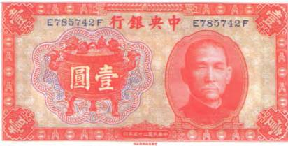
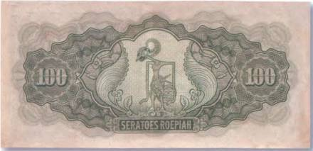

Тайны бумажных денег : Деньги праздников поминовения
 Праздник чистоты и ясности
Праздник чистоты и ясности
Ежегодно в начале апреля китайцы справляют праздник чистоты и ясности — Цин-мин. В 2008 г. он выпал на 4 апреля. Его еще называют «Тацинцзе», что переводится как «день прогулок по первой зелени». В это время целые толпы нарядно одетых людей заполняют улицы больших и малых городов. В руках у многих — веточки ивы и весенние цветы. А в небе над гуляющими кружатся пестрые воздушные змеи. Но Цин-мин еще и поминальный день — праздник в честь всех умерших. Сродни родительским дням [4].
Поэтому у него имеется и еще одно оригинальное название — праздник холодной пищи и чистого света. В это время на китайских кладбищах особенно многолюдно. Родственники почивших приводят в порядок могилы, совершают жертвоприношения и устраивают поминальные обеды. Кроме того, для своих любимых они приносят подарки — одежду, часы, мобильные телефоны, ноутбуки, машины и даже дома, которые вместе с уже упомянутыми «деньгами мертвых» (рис. 16) прямо на кладбищах и сжигаются… Ибо все эти подарки также сделаны из бумаги.
Кладбища, где покоятся зажиточные китайцы, представляют собой настоящие города, где есть дома, храмы-молельни и улицы. Многие из них давно превратились в охотно посещаемые туристами достопримечательности. К таким относится и старое китайское мемориальное кладбище в столице Филиппин Маниле. Оно расположено в квартале Бинондо, в котором уже давно не живут выходцы из Китая. Некоторые из расположенных там склепов имеют два этажа. В эти «дома мертвых» проведены электричество и водопровод. В них есть кухоньки, туалеты, кондиционеры и даже телевизоры. На стенах можно увидеть фотографии и дипломы умершего. А на фасадах зданий висят почтовые ящики, куда опускаются письма, адресованные на тот свет. Впрочем, пользуются всеми этими удобствами исключительно родственники усопших, когда приходят проведать своих родных. Там же, в склепах, стоят и специальные печи, в которых периодически сжигаются все те же импровизированные «деньги мертвых».
Рис. 16. «Адские деньги» — 1 000 000 000 долларов (258?128 мм)Способ спиритуального общения между миром людей и миром духов посредством сожжения специально для этих целей предназначенных трав, корений, молитвенных бумажек и курильных палочек известен с давних времен. А позаимствован он был у самого древнего из известных религиозных течений — шаманизма. Во дворе практически каждого даосистского храма в Китае обязательно установлен бронзовый котел (котлы), у которого верующие в любое время могут производить это таинство. И тысячи дымящихся курильных палочек ежедневно оповещают о состоявшейся передаче сокровенных человеческих желаний в мир иной. Монахи охотно помогают такому спиритуальному общению. Завидев очередного «просителя», они ударяют в бронзовый колокол (гонг), обычно подвешенный в храме, и таким образом обращают внимание божеств и духов на совершающееся в их честь жертвоприношение. Изображение типичного жертвенного котла (жертвенник) на трех ножках можно встретить на китайской боне в 1 юань 1936 г. (рис. 17).

И все-таки больше всего денег мертвых сжигают во время другого китайского праздника. Это Юэ-Лянь, или праздник голодных (блуждающих) духов, который справляется в конце июля — начале августа. Китайцы верят, что в последний день шестого месяца лунного календаря отворяется дверь между миром живых и миром мертвых. И как только это происходит, на землю устремляются полчища оголодавших духов. В большинстве своем это духи умерших, могилы которых либо уже совсем не посещаются родственниками, либо происходит это настолько редко, что приносимой ими ритуальной пищи не хватает для насыщения бесплотных сущностей. Понятно, что с такими оголодавшими духами шутки плохи. Вот китайцы и стараются угодить им, устраивая для призраков своеобразный фестиваль.
Интересно, что самые пышные торжества, приуроченные к празднику блуждающих духов, проходят вовсе не в Китае, а в Таиланде (Пхукет) и Сингапуре. Там, где проживают крупнейшие китайские диаспоры Юго-Восточной Азии.
Принято считать, что все голодающие духи, будучи людьми, совершали немало проступков и преступлений. За это в аду они были наказаны довольно оригинальным образом. Их рты превратились в крохотные отверстия размером с ушко цыганской иголки. Зная об этой «физиологической» особенности призраков, люди позаботились о том, чтобы и приносимая им в жертву пища была подходящей. Для оголодавших духов готовится специальное сладкое блюдо. Это кханом ла (khanom lаа) — как нитка тонкая лапшичка из рисовой муки и коричневого (тростникового) сахара. Техника приготовления очень проста. Жидкое тесто пропускают через специальное сито с крохотными отверстиями. Оттуда оно сразу попадает в кипящее масло, где тонкие нити моментально затвердевают, сохраняя при этом свою форму. Китайцы уверены, что от такого подношения духи ни за что не откажутся.
Когда наступает праздник Юэ-Лянь, особое почтение оказывается и божеству всех чертей. Это Пор Тор (Рог Tor Kong). У одной из начальных школ в Пхукете ему даже установлен небольшой жертвенник. На алтарь кладут специальные приношения — сладкие пироги и печенье в форме черепахи.

Находясь в мире людей, голодные духи в основном обитают на погостах или удаленных от человеческого жилья гиблых местах. Поэтому верующие в течение всего фестиваля стараются обходить кладбища, пустыри и свалки стороной. Китайцы верят, что призраки также очень любят прятаться за стволами кокосовых пальм и развалинами зданий (при этом наружу остаются торчать только их чрезмерно длинные носы и змееподобные языки). Оттуда они и пугают зазевавшихся прохожих жуткими замогильными голосами. Вероятно, именно такое призрачное существо изображено на колониальной боне в 100 рупий, имевшей хождение в Индонезии в 1944 г. (рис. 18).
Небесные деньгиПредприимчивые китайцы, кстати, не ограничились только выпуском «денег ада». Среди последних серий нет-нет да и промелькнет купюра, которую, если верить надписям на ней, пустил в оборот уже не «адский», а «небесный» банк (Heaven Bank). На ней даже изображено это во всех отношениях высочайшее финансовое учреждение. Впрочем, и на таких экзотах проставлено наименование «деньги ада» (рис. 19). Но, скорее всего, заказчикам ритуальных денег подобные нюансы и несоответствия не мешают. Главное, что эти купюры, как и все остальные «деньги мертвых», прекрасно выполняют свою функцию, регулярно пополняя счета загробного мира.
Рис. 19. «Адские деньги» — 10 000 долларов (153?85 мм)